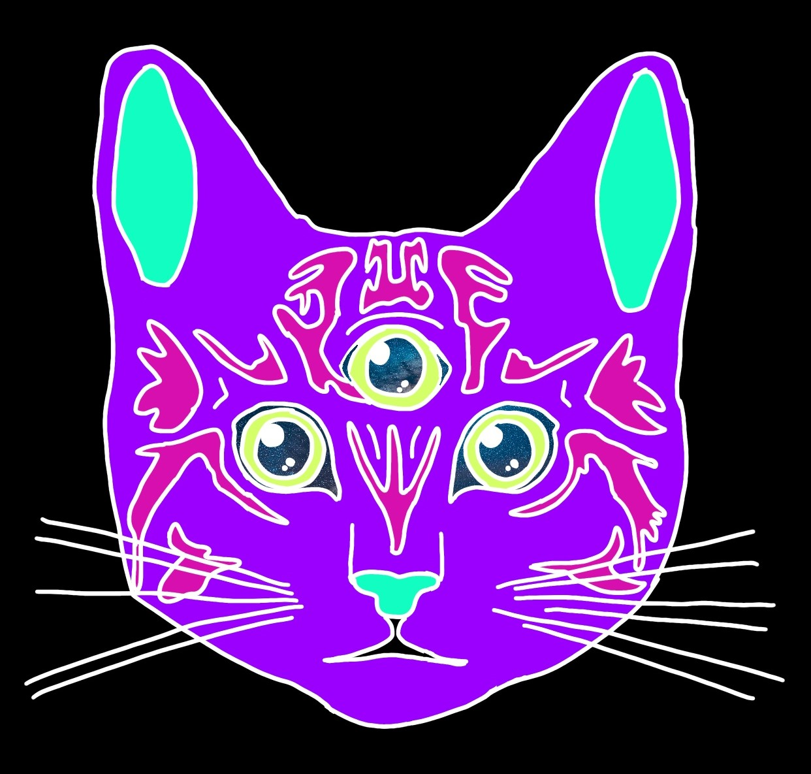

Using the .container class within bootstrap.
The .container class provides a responsive fixed width container.
The small element (and the .small class) is used to create a smaller, secondary text in any heading:
abbr elementUse this to to markup import abbreviations | acronyms
Everyone should know this one: DLEITE
I was caught off-guard the first time I looked one in the eyes.
kbd element for styling keyboard hotkeysIf you ever see one you can use ctrl + w to get the heck out of there!
pre element for special styling
pre haikus are kind of cool
because it preserves
space and line breaks in fixed width
| Mob | Defense | Comments |
|---|---|---|
| Creeper | Run | You can use a shield if your not worried about your terrain. |
| Enderman | Water | You can make a 3x3 platform right above your head and stand under it to collect enderpearls. |
| Chicken | None | They're chill. You can use them to boost Happy Ghast travel by up to 15 chicken power. |
The .rounded-circle class shapes the image to a circle:
